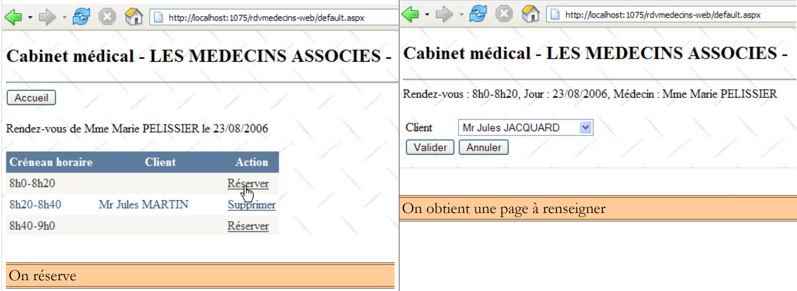

2. O : estudo de caso
2.1. O problema
Voltemos à aplicação que pretendemos construir. Partimos de uma aplicação existente com a seguinte arquitetura:
 |
Para quem quiser saber mais sobre:
- NHibernate: Introdução ao NHibernate ORM [http://tahe.developpez.com/dotnet/nhibernate/];
- aplicação ASP.NET (WebForms) com NHibernate e Spring: Construção de uma aplicação web de três camadas com ASP.NET, Spring.NET e NHibernate [http://tahe.developpez.com/dotnet/pam-aspnet/].
Queremos transformar a aplicação anterior nesta:
 |
onde EF5 substituiu NHibernate. Esta aplicação serve de pretexto para estudar o EF5. Como o Spring.NET nos permite mudar facilmente de camada sem causar erros, a aplicação 2 utilizará a mesma camada [ASP.NET] que a aplicação 1. Uma vez que este documento se dedica ao EF5, não iremos explicar a criação desta camada. Iremos introduzi-la na aplicação 2 para verificar se funciona. Explicaremos simplesmente as alterações a efetuar no ficheiro de configuração do Spring.NET.
O caso de estudo é o seguinte. Pretende-se oferecer aos médicos um serviço de marcação de consultas que funcione segundo o seguinte princípio:
- um serviço de secretariado assegura a marcação de consultas para um grande número de médicos. Este serviço pode ser assegurado por uma única pessoa. O salário desta pessoa é partilhado entre todos os médicos que utilizam o serviço;
- o serviço de secretariado e todos os médicos estão ligados à Internet;
- as RV são registadas numa base de dados centralizada, acessível pela Internet, tanto pela secretaria como pelos médicos;
- a marcação de RV é normalmente efetuada pela secretaria. Também pode ser efetuada pelos próprios médicos. É o caso, nomeadamente, quando, no final de uma consulta, o próprio médico marca um novo RV para o seu doente.
A arquitetura do serviço de atribuição do RV é a seguinte:
 |
Os médicos ganham em eficiência se deixarem de ter de gerir o RV. Se forem em número suficiente, a sua contribuição para as despesas de funcionamento do secretariado será reduzida. Chamaremos à aplicação [RdvMedecins]. Apresentamos abaixo algumas capturas de ecrã do seu funcionamento.
A página inicial da aplicação é a seguinte:

A partir desta primeira página, o utilizador (Secretariado, Médico) irá realizar uma série de ações. Apresentamo-las abaixo. A imagem à esquerda mostra a vista a partir da qual o utilizador efetua um pedido; a imagem à direita, a resposta enviada pelo servidor.
 |
 |
 |
 |
 |
2.2. A base de dados
A base de dados utilizada pela aplicação NHibernate é uma base de dados MySQL5 com quatro tabelas:

Esta servirá de referência para a construção de todas as nossas bases de dados.
2.2.1. A tabela [MEDECINS]
Contém informações sobre os médicos geridos pela aplicação [RdvMedecins].
 |  |
- ID: número que identifica o médico — chave primária da tabela
- VERSION: número que identifica a versão da linha na tabela. Este número é incrementado em 1 sempre que é feita uma alteração na linha.
- NOM: o nome do médico
- PRENOM: o seu nome próprio
- TITRE: o seu título (Menina, Sra., Sr.)
2.2.2. A tabela [CLIENTS]
Os clientes dos diferentes médicos estão registados na tabela [CLIENTS]:
 |  |
- ID: número de identificação do cliente — chave primária da tabela
- VERSION: número que identifica a versão da linha na tabela. Este número é incrementado em 1 sempre que é feita uma alteração na linha.
- NOM: o nome do cliente
- PRENOM: o seu nome próprio
- TITRE: o seu título (Menina, Sra., Sr.)
2.2.3. A tabela [CRENEAUX]
Esta tabela lista os intervalos horários em que os RV são possíveis:
 |
 |
- ID: número que identifica o intervalo horário — chave primária da tabela
- VERSION: número que identifica a versão da linha na tabela. Este número é incrementado em 1 sempre que é feita uma alteração na linha.
- ID_MEDECIN: número que identifica o médico a quem pertence este intervalo horário – chave estrangeira na coluna MEDECINS (ID).
- HDEBUT: hora de início do intervalo
- MDEBUT: minutos do início do intervalo
- HFIN: hora de fim do intervalo
- MFIN: minutos de fim do intervalo
A segunda linha da tabela [CRENEAUX] (ver [1] acima) indica, por exemplo, que o intervalo n.º 2 começa às 8h20 e termina às 8h40 e pertence à médica n.º 1 (Sra. Marie PELISSIER).
2.2.4. A tabela [RV]
Esta tabela lista os RV atribuídos a cada médico:
 |
- ID: número que identifica o RV de forma única – chave primária
- JOUR: dia do RV
- ID_CRENEAU: intervalo horário do RV – chave estrangeira na coluna [ID] da tabela [CRENEAUX] – define simultaneamente o intervalo horário e o médico em questão.
- ID_CLIENT: número do cliente para quem é feita a reserva – chave estrangeira na coluna [ID] da tabela [CLIENTS]
Esta tabela possui uma restrição de unicidade na sobre os valores das colunas associadas (JOUR, ID_CRENEAU):
Se uma linha da tabela [RV] tiver o valor (JOUR1, ID_CRENEAU1) para as colunas (JOUR, ID_CRENEAU), esse valor não pode aparecer em mais nenhum outro local. Caso contrário, isso significaria que dois RV foram registados ao mesmo tempo para o mesmo médico. Do ponto de vista da programação Java, o controlador JDBC da base de dados lança um SQLException quando esta situação ocorre.
A linha de id igual a 7 (ver [1] acima) significa que um RV foi reservado para o horário n.º 10 e o cliente n.º 2 em 10/09/2006. A tabela [CRENEAUX] indica-nos que o horário n.º 10 corresponde ao intervalo horário das 11h00 às 11h20 e pertence à médica n.º 1 (Sra. Marie PELISSIER). A tabela [CLIENTS] indica-nos que o cliente n.º 2 é a Sra. Christine GERMAN.
Este estudo de caso foi objeto de um artigo Java [http://tahe.developpez.com/java/primefaces], no qual se utiliza o Hibernate para Java ORM.